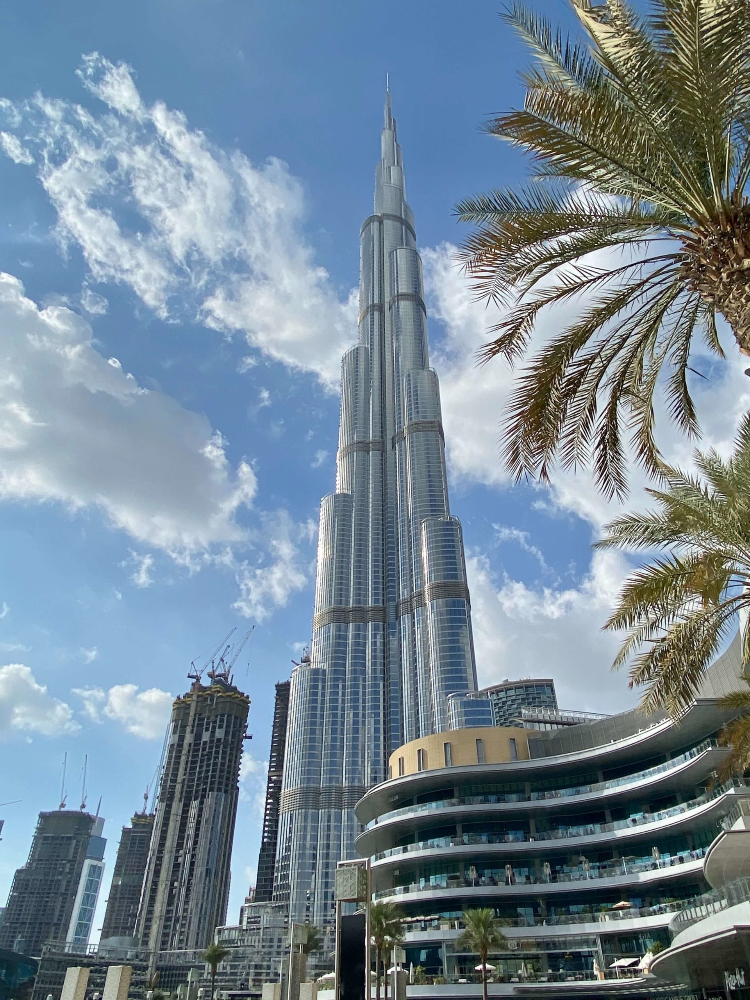
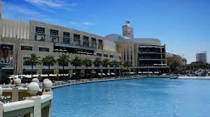
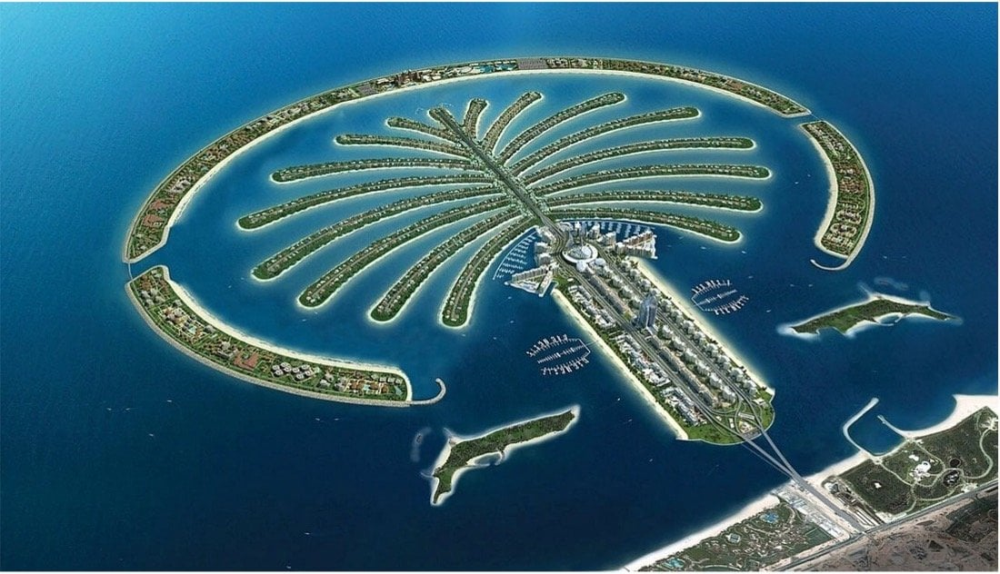
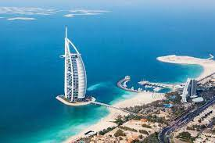
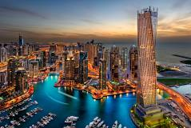

Dubaï, joyau des Émirats arabes unis, est une métropole qui défie les attentes et dépasse les limites de
l'extraordinaire. Cette ville cosmopolite est un véritable spectacle de grandeur, où les gratte-ciel
vertigineux rivalisent pour atteindre les nuages, les centres commerciaux rivalisent pour offrir des
expériences de shopping extravagantes, et les îles artificielles défient la logique même de l'ingénierie.
Dubaï est bien plus qu'une destination de vacances; c'est une expérience à part entière. Les visiteurs y
découvrent un mélange fascinant de traditions arabes et de modernité futuriste. Des souks animés aux marchés
aux épices parfumés, en passant par les centres commerciaux luxueux et les hôtels de renommée mondiale,
Dubaï offre une palette infinie de découvertes. La ville brille également par ses attractions emblématiques
telles que le Burj Khalifa, le plus haut gratte-ciel du monde, ou l'archipel en forme de palmier, Palm
Jumeirah. Que ce soit pour le shopping, les loisirs, la gastronomie ou simplement pour découvrir une ville
qui repousse sans cesse les limites de l'imagination, Dubaï est une destination incontournable pour tout
voyageur en quête d'aventure et d'émerveillement.
Lieux populaires à visiter à Dubai
Dubai est connue pour ses monuments emblématiques, ses musées et ses attractions culturelles. Voici
quelques-uns des lieux les plus populaires à visiter :
-
Burj Khalifa :
Le Burj Khalifa est bien plus qu'un simple gratte-ciel, c'est une icône architecturale qui
domine l'horizon de Dubaï. Avec ses 828 mètres de hauteur, c'est la plus haute structure jamais
construite par l'homme. Les visiteurs peuvent monter jusqu'à l'observatoire "At the Top" situé
au 148ème étage pour profiter d'une vue à couper le souffle sur la ville, le désert et le golfe
Persique. La nuit, lorsque la ville s'illumine, l'expérience devient vraiment magique.


- Dubai Mall :
Le Dubai Mall est bien plus qu'un simple centre commercial, c'est un véritable paradis du
shopping et du divertissement. Avec plus de 1200 magasins, un immense aquarium, une patinoire
olympique et même un parc d'attractions en intérieur, il offre une expérience inégalée pour les
amateurs de shopping et de divertissement. Les visiteurs peuvent également assister au spectacle
des fontaines dansantes situées à l'extérieur du centre commercial, une expérience visuelle à ne
pas manquer.
- Jumeirah :
Une prouesse d'ingénierie et un symbole de luxe, la Palm Jumeirah est une île artificielle en
forme de palmier située le long de la côte de Dubaï. Les visiteurs peuvent explorer ses hôtels
de luxe, ses plages de sable blanc et ses attractions emblématiques comme l'Atlantis, The Palm,
où ils peuvent nager avec les dauphins ou glisser sur des toboggans aquatiques palpitants. Une
croisière autour de l'île offre également une vue panoramique saisissante de cette merveille
architecturale.


- Burj Al Arab :
Souvent décrit comme l'hôtel le plus luxueux du monde, le Burj Al Arab est une véritable
merveille architecturale en forme de voile qui se dresse majestueusement au-dessus de la côte de
Dubaï. Même si vous ne séjournez pas dans cet hôtel emblématique, vous pouvez réserver une table
dans l'un de ses restauransts de renommée mondiale et profiter d'une expérience culinaire
inoubliable avec une vue imprenable sur la ville et le golfe Persique.
- Dubai Marina :
La Dubai Marina est un quartier animé et cosmopolite connu pour ses impressionnants gratte-ciel,
ses yachts luxueux et sa promenade animée bordée de cafés, de restaurants et de boutiques
élégantes. Les visiteurs peuvent profiter d'une croisière en boutre traditionnel le long des
canaux, offrant une vue panoramique sur les gratte-ciel scintillants et les eaux turquoise. De
jour comme de nuit, la Dubai Marina offre une atmosphère vibrante et une expérience unique à
ceux qui la visitent.
